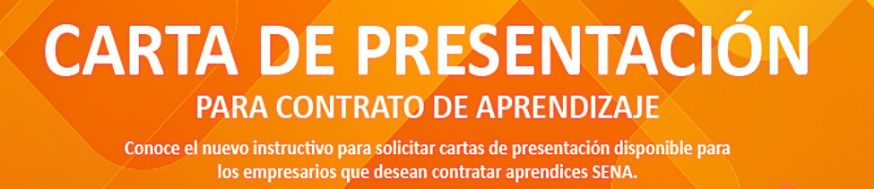
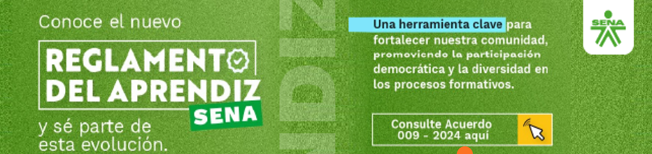

ACTUALIDADES DE NUESTRO CENTRO
Revisión de la oferta de formación de CAMPESENA 2025 - Corregimiento de Santa Elena

El pasado 18 de febrero de 2025 a las 11:00 a. m., el Centro de Servicios y Gestión Empresarial llevó a cabo una
reunión especial en la que se presentó oficialmente al nuevo Subdirector (e) del centro, John Albeiro Giraldo
Londoño al equipo de Sapiencia en Santa Elena.
Durante el encuentro, los asistentes tuvieron la oportunidad de conocer al nuevo líder, quien compartió su
visión y compromiso con el desarrollo del centro. Además, se realizó una revisión detallada de la oferta de
formación de CAMPESENA 2025, una iniciativa clave para fortalecer el aprendizaje y la capacitación en
el sector rural. CAMPESENA continúa siendo un pilar fundamental en la educación de nuestros campesinos
y emprendedores, brindando oportunidades de crecimiento y desarrollo sostenible
en las comunidades.
Los Programas y Servivios
Misionales del SENA
son GRATUITOS
CARTA DE PRESENTACIÓN PASANTÍAS 2025
INSTRUCTIVO SOLICITUD CONTRATO DE APRENDIZAJE
REGLAMENTO APRENDIZ SENA
REUNIÓN DE VOCEROS
Las reuniones de voceros del SENA son encuentros entre los voceros de la institución y sus directivos. En estas reuniones se discuten temas como la elección de representantes, la proyección de la imagen de la institución y la solución de problemáticas.
Temas tratados en las reuniones Explicación del proceso electoral de representantes, Elección de representantes, Solución de problemáticas de los diferentes nodos, Proyección de la imagen de la institución, Potenciación de las cualidades de la dependencia.
Voceros del SENA: Los voceros del SENA son la voz oficial de la institución y la fuente de información oficial en temas de diversa naturaleza. Son responsables de proyectar y apoyar la construcción de una imagen positiva de la institución